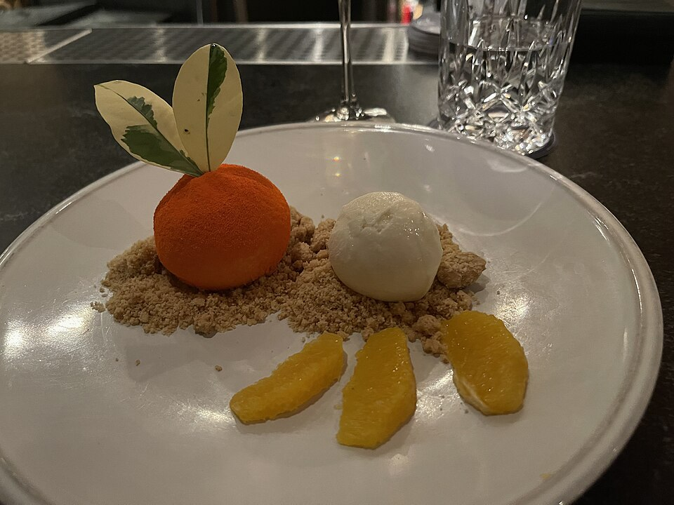

Doces
Musse de tangerina e chocolate branco

Ingredientes
- 200 g de chocolate branco derretido
- 1 lata de creme de leite gelado sem soro
- 1 envelope de gelatina sem sabor
- ½ xícara (chá) de suco concentrado de tangerina
- 2 claras
- 2 colheres (sopa) de açúcar
- Raspas de 1 tangerina
Modo de preparo
- Misture o chocolate e o creme de leite.
- Hidrate a gelatina no suco 5 minutos e dissolva em banho-maria; junte ao creme.
- Bata as claras em neve com o açúcar até suspiro, misture, distribua em taças, gele 4 horas e polvilhe as raspas.